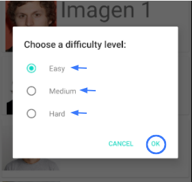
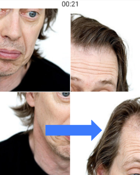

Selecciona la imagen que deseas para hacer el puzzle, y a continuación el nivel de dificultad.

Para empezar a jugar solo tienes que arrastrar uno de los trozos al lugar donde quieres llevarlo,
y de esta manera se intercambiarán las posiciones.
Hazlo con todos los trozos hasta tener el puzzle hecho correctamente.

Como vemos, en la parte de arriba hay un contador que guardará tu tiempo para después verlo en el score.
Si deseas ver más información, accede a nuestro repositorio.